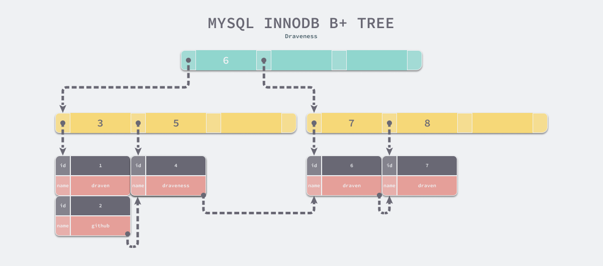
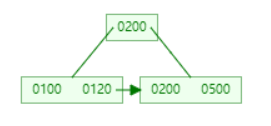
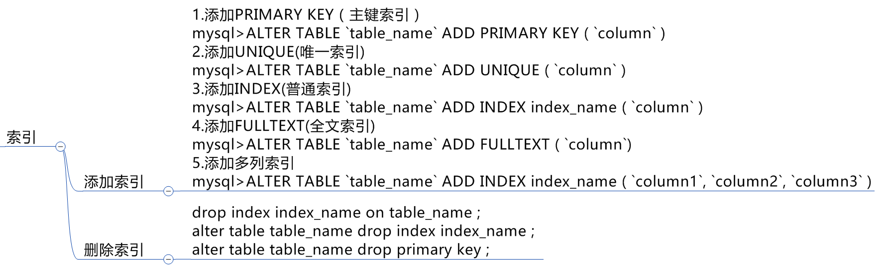
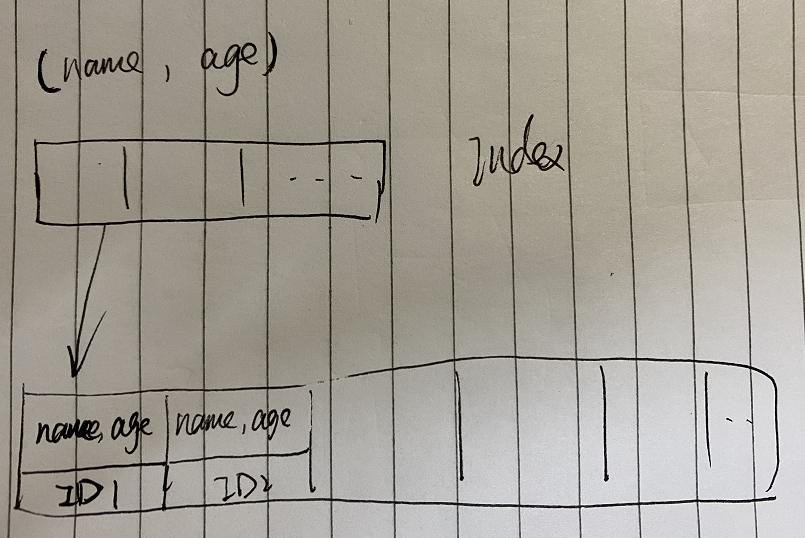
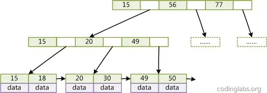

MySQL各类索引总结以及优化
MySQL中的索引，一般来说，我们使用的比较多的是b+tree，hash索引。
且因为在MySQL中，存在不同的存储引擎，这两种索引存在的形式也有些不大一样。这里我们也只引入MyISAM和Innodb存储引擎。
使用到的示例数据：sakila-db
索引的好处
索引的好处指：索引给数据库带来性能损耗小于带来的好处，索引即是有利的。
- 索引大大减少了存储引擎需要扫描的数据量；
- 索引可以帮助我们进行排序以避免使用临时表；
- 索引可以把随机I/O变为顺序I/O；
添加索引会提高查询速度，其实也就是将数据不管从逻辑还是物理上，将无序数据变为有序数据。
不过索引也是会带来一定的损耗的：
索引的引入会增加写操作的成本。不过Innodb引入了插入缓存解决了这个问题。
同时，太多索引会增加查询优化器的选择时间。
Hash索引
MyISAM和Innodb都不支持hash索引，不过Innodb有点不同的是，它不能说完全不支持，它的hash索引的创建由引擎自动优化创建，需要开启这个特性，人为无法干预创建。当我们试图创建时，mysql也不会报错，只不过会自动转化为B树索引。
特点
Hash索引是基于Hash表实现的，只有查询条件精确匹配Hash索引中的所有列时，才能够使用到hash索引。（故只支持等值比较查询=，in()， <=>，而不包含排序或范围查询的需求）
对于Hash索引中的所有列，存储引擎都会为每一行计算一个Hash码，Hash索引中存储的就是Hash码。（哈希索引包括哈希值，以及行的指针）。
限制：
- 因索引不保存数据，索引需要读取行来读取想要的数据，发生二次查找，但有缓存，速度很快，所以也就没啥影响。
- 无法用于排序，哈希索引数据并不是按照索引列的值顺序存储的，所以也就无法用于排序。
- 哈希索引也不支持部分索引列匹配查找，因为哈希索引始终是使用索引的全部列值内容来计算哈希值的。如：数据列（a,b）上建立哈希索引，如果只查询数据列a，则无法使用该索引；也不支持范围查找。
- Hash索引中Hash码的计算可能存在Hash冲突。维护成本比较高。
因此在绝大多数需求为单条记录查询的时候，可以选择哈希索引，查询性能最快；其余大部分场景，建议选择BTree索引。
B树索引
普通的B树和B+树中，最大区别就是，B 树可以在非叶结点中存储数据，但是 B+ 树的所有数据其实都存储在叶子节点中。
参考文章：为什么 MySQL 使用 B+ 树，数据加载这小节。
因为B树的节点都存储数据，那也就是说我要查询数据的话，必须遍历这些节点来取数据，运气好立马就能拿到数据，运气不好就会按树遍历的方式，来回折腾，速率是不稳定的。那B+树呢，因为数据都在叶子节点中，也就是数据都在树的最底下的那一层，当我通过索引去遍历时，通过一个 B+ 树最左侧的叶子节点，通过在叶子节点间建立链表连接，我们可以像链表一样遍历整个树中的全部数据。（通过此网站进行模拟）

通过模拟网站，我们也能看到节点是有排序的。
MySQL中的索引
在MySQL中，索引是在存储引擎层实现的，所以并没有统一的索引标准，即不同存储引擎的索引的工作方式并不一样。而即使多个存储引擎支持同一种类型的索引，其底层的实现也可能不同。
MyISAM和InnoDB引擎中，B树索引不是相对等的，虽然其可以被称为同一类数据结构——平衡查找树。
平衡查找树——每个叶子到根部的距离都是相同的，并且所有的键值都是按照键值的大小存放在同一层的叶子节点上的，各个叶子节点由指针来进行连接。
MyISAM：
叶子节点存储指向数据的物理地址。
InnoDB：
叶子节点指向数据的主键。
树当中没有子结点的结点称为叶子结点
主键即为聚集索引，InnoDB数据文件本身即为索引文件。树的叶子节点data域保存了完整的数据记录，而这个索引的key是数据表的主键。
因为InnoDB作为主流，且在实际业务中好像也没什么机会使用到MyISAM引擎，所以接下来的索引各方面都从InnoDB出发。
InnoDB索引
每一个索引在InnoDB里面都对应一棵B+树。
假设，我们有一个主键列为ID的表，表中有字段k，并且在k上有索引。
这个表的建表语句是：
1 | mysql> create table T( |
表中R1~R5的(ID,k)值分别为(100,1)、(200,2)、(300,3)、(500,5)和(600,6)，两棵树的示例示意图如下。

从图中不难看出，根据叶子节点的内容，索引类型分为主键索引和非主键索引。
主键索引的叶子节点存的是整行数据。在InnoDB里，主键索引也被称为聚簇索引（clustered index）。
非主键索引的叶子节点内容是主键的值。在InnoDB里，非主键索引也被称为二级索引（secondary index）。
根据上面的索引结构说明，我们来讨论一个问题：基于主键索引和普通索引的查询有什么区别？
- 如果语句是select * from T where ID=500，即主键查询方式，则只需要搜索ID这棵B+树；
- 如果语句是select * from T where k=5，即普通索引查询方式，则需要先搜索k索引树，得到ID的值为500，再到ID索引树搜索一次。这个过程称为回表。
索引的维护
B+树为了维护索引有序性，在插入新值的时候需要做必要的维护。以上面这个图为例，如果插入新的行ID值为700，则只需要在R5的记录后面插入一个新记录。如果新插入的ID值为400，就相对麻烦了，需要逻辑上挪动后面的数据，空出位置。
而更糟的情况是，如果R5所在的数据页已经满了，根据B+树的算法，这时候需要申请一个新的数据页，然后挪动部分数据过去。这个过程称为页分裂。在这种情况下，性能自然会受影响。

有分裂就有合并，当索引被删除时，空间不会被回收，当页利用率很低之后，就会开启合并，详细的我建议是利用我写的模拟网站进行模拟操作，另外是看InnoDB中的页合并与分裂。
基于上面的索引维护过程说明，我们来讨论为什么在一些建表规范里面见到过类似的描述，要求建表语句里一定要有自增主键：
自增主键是指自增列上定义的主键，在建表语句中一般是这么定义的： NOT NULL PRIMARY KEY AUTO_INCREMENT。
插入新记录的时候可以不指定ID的值，系统会获取当前ID最大值加1作为下一条记录的ID值。
也就是说，自增主键的插入数据模式，正符合了我们前面提到的递增插入的场景。每次插入一条新记录，都是追加操作，都不涉及到挪动其他记录，会自然增长到页数据满。
而有业务逻辑的字段做主键，则往往不容易保证有序插入，这样写数据成本相对较高。
除了考虑性能外，我们还可以从存储空间的角度来看。假设你的表中确实有一个唯一字段，比如字符串类型的身份证号，那应该用身份证号做主键，还是用自增字段做主键呢？
由于每个非主键索引的叶子节点上都是主键的值。如果用身份证号做主键，那么每个二级索引的叶子节点占用约20个字节，而如果用整型做主键，则只要4个字节，如果是长整型（bigint）则是8个字节。
显然，主键长度越小，普通索引的叶子节点就越小，普通索引占用的空间也就越小。
所以，从性能和存储空间方面考量，自增主键往往是更合理的选择。
有没有什么场景适合用业务字段直接做主键的呢？还是有的。比如，有些业务的场景需求是这样的：
- 只有一个索引；
- 该索引必须是唯一索引。
你一定看出来了，这就是典型的KV场景。
由于没有其他索引，所以也就不用考虑其他索引的叶子节点大小的问题。
这时候我们就要优先考虑上一段提到的“尽量使用主键查询”原则，直接将这个索引设置为主键，可以避免每次查询需要搜索两棵树。
B树索引这小节部分，很大部分补充自MySQL实战45讲/05讲深入浅出索引。
MySQL添加索引操作

使用索引的注意事项
索引列上不能使用表达式或函数
例如where id = 1，where to_int(id) = 1，在id作为索引的这两条where子句，前者可以使用索引查询，而后者将无法使用索引。
所以尽量在数据上动心思，不要在索引列上进行操作。

前缀索引和索引列的选择性
选择性怎么体现，例如，数据库中性别列，只有男女两个选择（一般情况下），那么其可选择性即是极差，数据没有变化性，索引了这一组数据，会从文件中捞出一大堆这样的数据（很好理解，男女都有很多记录），我们要的情况是，索引中数据后，只捞出极少数数据或直接命中数据。
所以我们会追求索引列数据的多样性。但有一些列多样性很好，但宽度极大，不利于索引（很好理解，中国少字姓氏总比外国人一批条字的姓氏好认），同时，索引可是有大小限制的（见上图）。
这里，就有了前缀索引来解决这个问题。
对于列的值较长，比如BLOB、TEXT、VARCHAR，就必须建立前缀索引，即将值的前一部分作为索引。这样既可以节约空间，又可以提高查询效率。但无法使用前缀索引做 ORDER BY 和 GROUP BY，也无法使用前缀索引做覆盖扫描。
1 | # 语法 |
那如何量化前缀索引的选择性？
例如有这样一张表。
1 | mysql> select count(*) as cnt, city from city_demo group by city order by cnt desc limit 10; |
可以先计算完整列的选择性。
1 | mysql> select count(distinct city) / count(*) from city_demo; |
可以在一个查询中针对不同前缀长度的选择性进行计算，这对于大表非常有用，下面给出如何在同一个查询中计算不同前缀长度的选择性：
1 | mysql> select count(distinct left(city,3))/count(*) as sel3, |
可以看见当索引前缀为6时的基数是0.4267，已经接近完整列选择性0.4283。
1 | mysql> alter table city_demo add key (city(6)); |
联合索引
可以参考一下原则：
- 经常会使用到的列优先
- 选择性搞的列优先
- 宽度小的列优先
同时需要注意索引的注意项，例如索引字段不可施加函数，联合索引依然遵循，最左列不可使用函数，而且联合索引在使用时也不能缺失最左列。
联合索引的B+树：

也就是说，当我们要需要拿取name，age，id这三个字段时，会形成覆盖索引，不需要回表拿数据。
覆盖索引
优点：
- 可以优化缓存，减少磁盘IO操作；
- 可以减少随机IO，变随机IO操作为顺序IO操作
- 可以避免对InnoDB主键索引的二次查询
- 可以避免MyISAM表进行系统调用
虽然优点很明显，但限制同样很明显，并不是可以任意生效覆盖索引的。例如：
- 存储引擎本身不支持覆盖索引；
- 查询中使用（获取）了太多列；
- 使用了双
%号的like查询。
百分号是属于mysql自身的操作，其操作无法在磁盘中进行，必须要将数据读取至内存中进行操作。
以sakila中film表为例。

操作1：
获取language_id，可以直接通过索引就能得到数据，不需要拿到索引后去数据列拿取数据。

操作2：
直接从索引拿不到数据，需要读取索引到内存中，再到数据中过滤数据。

操作3：
Innodb 主键作为聚集索引，数据与索引是存储在一起的，即使使用的是二级索引查询，获取多列数据，但其包含的是主键，所以依然属于覆盖索引。

1、覆盖索引：如果查询条件使用的是普通索引（或是联合索引的最左原则字段），查询结果是联合索引的字段或是主键，不用回表操作，直接返回结果，减少IO磁盘读写读取正行数据
2、最左前缀：联合索引的最左 N 个字段，也可以是字符串索引的最左 M 个字符
3、联合索引：根据创建联合索引的顺序，以最左原则进行where检索，比如（age，name）以age=1 或 age= 1 and name=‘张三’可以使用索引，单以name=‘张三’ 不会使用索引，考虑到存储空间的问题，还请根据业务需求，将查找频繁的数据进行靠左创建索引。
4、索引下推：联合索引（name, age），name like '张%'and age >10 检索，MySQL5.6版本之前，会对匹配的数据进行回表查询。5.6版本后，会先通过索引中覆盖的age数据过滤掉age<10的数据，再进行回表查询，减少回表率，提升检索速度
索引优化查询
使用索引扫描来优化排序
按照索引顺序扫描数据。
需要的条件：
- 索引的列顺序和Order By子句顺序完全一致；
- 索引中所有列的方向（升序、降序）和Order By子句完全一致；
- Order By中的字段全部在关联表中的第一张表中。
表结构：

rental_date，inventory_id，customer_id，是联合唯一索引。
INNODB->使用到了索引（主键）进行排序。success。

myisam使用了文件进行排序。

使用到了联合索引，获取完整的数据则需要回表查询数据。success。

使用到降序desc，则需要使用文件排序。

联合索引中最左边的列使用范围查找，则导致右边的索引失效。

模拟Hash索引优化查询
Innodb是引擎自动管理，而我们可以手动进行创建。
- 其只能处理键值的全值匹配查找；
- 所使用的Hash算法决定索引键的大小。
可以用于对数据很长的列，计算Hash反而会缩短其长度。添加Hash可以使用MySQL触发器。
删除重复和冗余的索引
使用工具
pt-duplicate-key-checker ，可以检查一些重复和冗余的索引。
查找未使用过的索引
1 | select object_schema,object_name,index_name,b.`TABLE_ROWS` |
更新索引统计信息以及减少索引碎片
1 | analyze talbe table_name |
经常更新数据的磁盘需要整理碎片，数据库也是这样，Optimize Table语句对MyISAM和InnoDB类型的表都有效。
B+Tree结构
非叶子节点不存储data，只存储索引key；只有叶子节点才存储data。（叶子节点为树中没有子节点的节点）（所以B树索引查找数据是一级一级深入的找）
在B+Tree的每个叶子节点增加一个指向相邻叶子节点的指针，就形成了带有顺序访问指针的B+Tree。

参考：[MySQL Index](https://github.com/Snailclimb/JavaGuide/blob/master/docs/database/MySQL Index.md)
本文标题：MySQL各类索引总结以及优化
文章作者：小师
发布时间：2021-04-27
最后更新：2022-05-04
原始链接：chunlife.top/2021/04/27/MySQL简单索引总结汇/
版权声明：本站所有文章均采用知识共享署名4.0国际许可协议进行许可